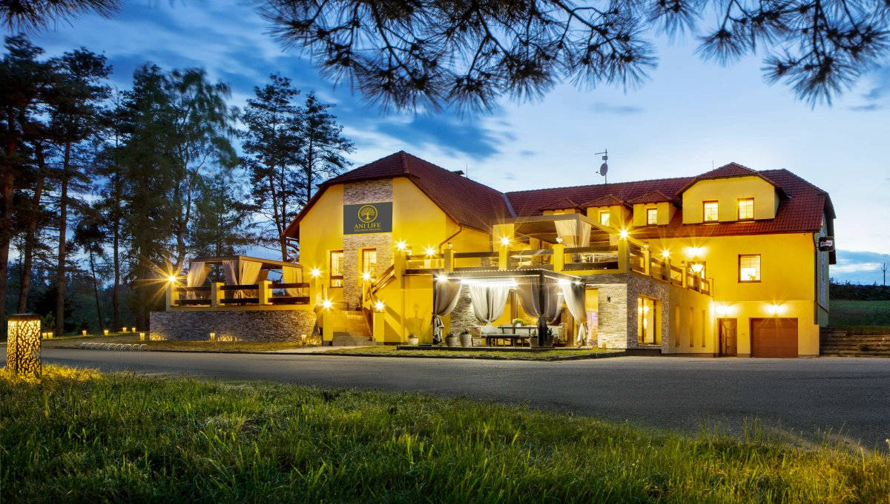
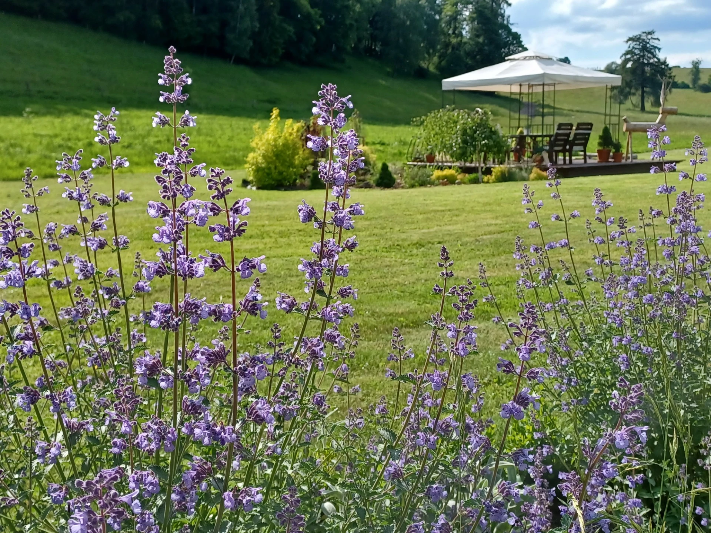

Hostina
Místo a Čas
Hostina i ubytování budou ve Wellness penzionu Anilife. Penzion stojí na svahu nad obcí Číměř u Jindřichova Hradce, v srdci České Kanady, v klidné lokalitě uprostřed přírody. Najdete v něm útulné pokoje, restauraci a wellness s vnitřním bazénem, finskou saunou, vířivkou a infrasaunou. Více informací a fotografií najdete na webu penzionu.


Adresa
Wellness penzion Anilife
Číměř 5
378 32 Číměř
Cesta z Českých Budějovic
Z Českých Budějovic jeďte po silnici I/34 přes Třeboň do Jindřichova Hradce. Zde odbočte na silnici II/128 směrem na Novou Bystřici. Ta vás povede přes Horní Pěnu až do Číměře, kde penzion najdete na svahu nad obcí. Cesta zabere zhruba hodinu.
Ubytování
Jedná se o menší penzion, takže počet pokojů je omezený, je třeba se předem domluvit s námi o ubytování. Je možné už od pátku do neděle. Budeme rádi, pokud s námi strávíte co nejvíce času, klidně přijeďte už den před samotnou oslavou :)
Pokoje jsou již uhrazeny, stejně tak snídaně i wellness.
V den svatby bude připravena svatební hostina a večerní raut, včetně nápojů. Jídlo a pití mimo den svatby si hosté hradí sami.
Parkování
Parkovat lze přímo před penzionem. Dostatek místa pro všechny hosty.
Jídlo a pití
Pití
Hosté si mohou přivézt i vlastní pití. Alkoholické i nealkoholické nápoje budou zajištěny.
Menu
| Chod | Popis |
|---|---|
| Předkrm | — |
| Polévka | — |
| Hlavní chod | — |
| Dezert | — |
Večer
Na večer bude připraven raut.
Něco sladkého
Ze sladkého nabídneme svatební dort a sweet bar.
Zasedací pořádek
Najeďte myší (nebo klepněte) na kroužek a zobrazí se celé jméno hosta.